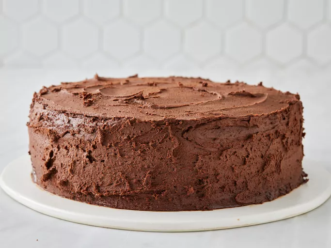

Lasagna

Description
There's nothing like a good ol' back-of-the-box recipe. This recipe for Hershey's chocolate cake can be found on
the baking aisle of any grocery store (specifically, on the label of the brand's signature unsweetened cocoa
powder).
The iconic chocolate cake recipe was shared on Allrecipes more than 20 years ago, and has since earned almost 3,000
rave reviews and ratings. It's not hard to see why it's beloved by the Allrecipes community: Hershey's chocolate
cake is incredibly indulgent, yet incredibly easy to make with basic ingredients. Try it today to see what all the
fuss is about!
Ingredients
- Sugar:
Two cups of white sugar add the perfect amount of sweetness, while locking in the moisture from the other
ingredients.
- Flour:
All-purpose flour provides structure, acts as a thickening agent, and helps build the fluffy texture.
- Cocoa Powder:
Of course, you'll want to use Hershey's brand unsweetened cocoa powder for this one. It adds the rich, indulgent
flavor you know and love.
- Leaveners:
Baking powder and baking soda act as leaveners, which means they cause the batter to expand and give the cake a
perfect rise.
- Salt:
Just a teaspoon of salt is all you'll need to add complexity and highlight the other flavors. It might not seem
like a lot, but you'll definitely miss the salt if you skip it.
-
Eggs:
Whole eggs affect the cake in a number of ways: They provide structure, add moisture, lend flavor, and contribute
to a tender texture.
-
Milk:
Whole milk adds moisture and helps the batter come together smoothly.
-
Oil:
Vegetable oil ensures your cake will never be dry.
-
Vanilla:
Two teaspoons of vanilla extract add complex flavor and bring out the flavors of the other ingredients, such as
the cocoa powder.
-
Boiling Water
You might be wondering why this recipe calls for a cup of boiling water. It intensifies the chocolatey flavor,
contributes to the fluffy texture, and reacts with the leaveners to create an even higher rise.
Steps
- Make the Batter:
Stir together the dry ingredients in a mixing bowl. Add the wet ingredients and beat with an electric mixer for
about three minutes. Stir in the boiling water by hand.
- Bake the Cake: Pour the batter into two prepared round cake pans. Bake in a preheated oven
until a toothpick inserted in the center comes out clean. Let the cakes cool slightly before removing from the
pans.
- Frost the Cake:
While the cake finishes cooling to room temperature, make the frosting: Cream the butter, stir in the cocoa and
confectioners' sugar alternately with the milk and vanilla, and beat until it's smooth and spreadable.
When the cake is completely cooled, top each layer with the frosting. Stack them and continue frosting until
the cake is completely covered.
Home